Задача на семейные отношения
Назад
GitHub
Условия задачи:
Указаны попарные взаимосвязи (отец - ребенок),
(мать - ребенок), исходя из этих данных необходимо определенного человека.
В нашей задаче необходимо найти племянника жены сына Федорова Г.Д.
Входные данные
Отцы
Матери
- Семенов Д.Д. - Филлипова В.Д.
- Федоров М.Г. - Федоров А.М.
- Шувалов В.И. - Шувалова Е.В.
- Филиппов Д.А. - Федорова А.Д.
- Федоров Г.Д. Федорова Я.Г.
- Шувалов И.Н. - Шувалов В.И.
- Федоров М.Г. - Кудрявцева А.М.
- Федоров А.М. - Федоров Я.А.
- Шувалов В.И. - Шувалов В.В.
- Кудрявцев Г.Г. - Кудрявцев К.Г.
- Федоров М.Г - Федоров В.М.
- Федоров Г.Д. - Федоров М.Г.
- Кудрявцев Г.В. - Кудрявцев Г.Г.
- Филиппов А.А. - Филиппов Д.А.
- Филиппов Д.А. - Шувалова И.Д.
- Федорова А.Д. - Кудрявцева А.М.
- Федорова М.М. - Федорова Я.Г.
- Семенова М.Д. - Филлипова В.Д.
- Филиппова М.И. - Филиппов Д.А.
- Кудрявцева А.М. - Кудрявцев К.Г.
- Филиппова В.Д. - Шувалова И.Д.
- Федорова М.М. - Федоров М.Г.
- Федорова А.Д. - Федоров В.М.
- Шувалова И.Д. - Шувалов В.И.
- Шувалова А.А. - Шувалов В.В.
- Филиппова В.Д. - Федорова А.Д.
- Шувалова А.А. - Шувалова Е.В.
- Федорова А.Д. - Федоров А.М.
- Кудрявцева А.М. - Кудрявцев Г.Г.
- Федорова К.М. - Федоров Я.A.
То есть Семенов Д.Д. является отцом для Филипповой В.Д.
Федорова А.Д. является матерью для Кудрявцевой А.М. и так далее
Для решения такой задачи человеку удобнее всего построить семейное древо и с помощью него решить задачу.
Например, для нашей задачи семейное древо будет выглядеть вот так, по нему видно, что сын Федоров Г.Д. это Федоров М.Г. его жена это Федорова А.Д. а ее племянником является Шувалов В.И.
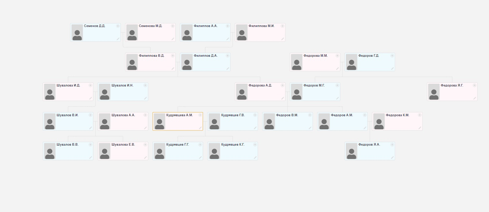
Но программно строить древо семьи и по нему искать ответ слишком сложно, поэтому реализовать решение с помощью отношений будет оптимально.
Для реализации необходимо описать взаимосвязь между Федоровым Г.Д. и искомым человеком.
Необходимо найти племянника жены сына, для этого реализуем отношение (племянник/племянница жены/мужа ребенка - родитель мужа/жены дяди/тети)
Такая взаимосвязь состоит из других, а именно: (родитель - ребенок), (брат/сестра - брат/сестра), (племянник/племянница - дядя/тетя), (муж/жена - жена/муж),
(муж/жена ребенка - родитель мужа/жены)
Реализация отношений
1) Реализация отношения (родитель - ребенок):
a является родителем для b, если a является отцом b или a является матерью b
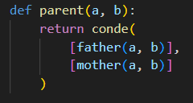
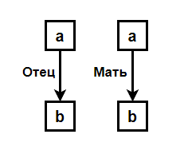
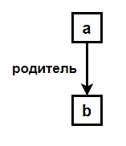
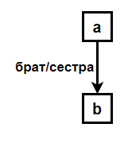
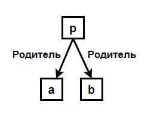
2) Реализация отношения (брат/сестра - брат/сестра):
a и b состоят в таких отношениях, если существует такое p, что
p родитель a и p родитель b
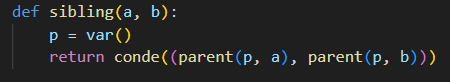
3) Реализация отношения (племянник/племянница - дядя/тетя):
a и b состоят в таких отношениях, если существует такое q, что q является родителем a и братом/сестрой b
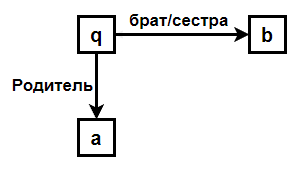
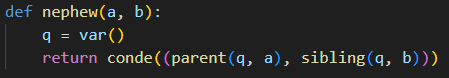
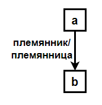
4) Реализация отношения (муж/жена - муж/жена):
a и b состоят в таких отношениях, если существует такое c, что
a является родителем c, и b является родителем c
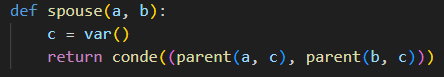
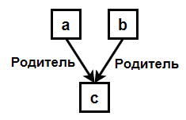
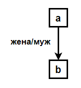
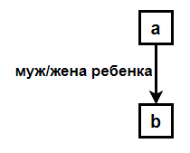
5) Реализация отношения (муж/жена ребенка - родитель мужа/жены):
a и b состоят в таких отношениях, если существует такое c, что
b является родителем c, a является мужом/женой с
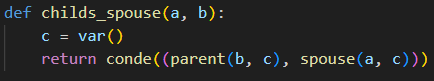
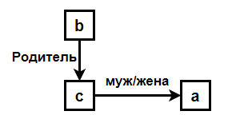
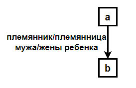
6) Реализация искомого отношения:
a является племянником мужа/жены ребенка для b, если существует такое c, что c муж/жена ребенка b и a является племянником/племянницей c.
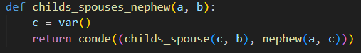
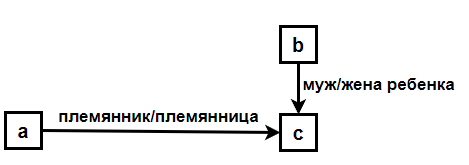
Поиск решения
После реализации всех необходимых отношений необходимо запустить код, на вход подается неизвестное q и отношение, которое должно выполняться между q и Федоровым Г.Д.
Результатом выполнения кода будет все подходящие q, в нашей задаче оно одно - Шувалов В.И.
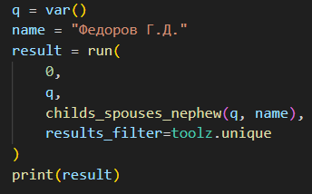
Решение выложено на гитхаб, ссылка находится в шапке данной страницы